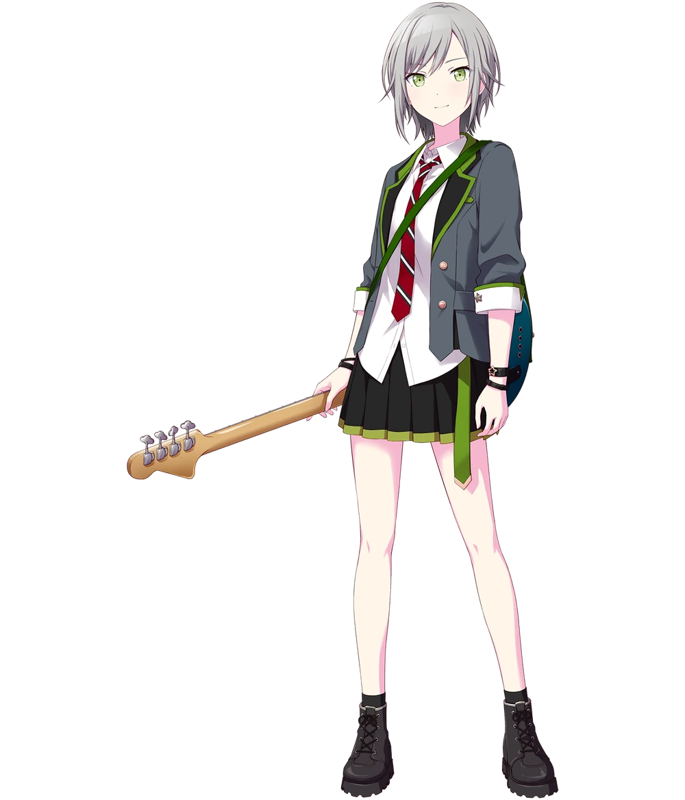

Hinomori Shiho

Hinomori Shiho (日ひ野の森もり 志し歩ほ) is a second-year student at Miyamasuzaka Girls Academy. She is the bassist of Leo/need.
Background
This section may contain spoilers from the story, please read at your own risk!
Leo/need's bassist. She is determined about music and is often misunderstood due to being a lone wolf who dislikes clinginess. Shiho deeply cares for her band members, alongside who she has chased and achieved the dream of becoming professional musicians.
Shiho and Ichika, Saki, and Honami were friends as children. The group used to stargaze and play music, but because of Saki's hospitalization during middle school, Shiho's relationships with Ichika and Honami became strained. Eventually Shiho was placed in a class where she didn't know anyone. Her classmates tried to befriend Shiho, but she had no interest in them, giving her a bad reputation. Due to the rumors about her, she made Ichika and Honami stop talking to her, in fear of her reputation poorly affecting them. After Saki returns to school and they access the School SEKAI, the group slowly reunites and forms Leo/need, named after the meteor shower they watched together as children.
When Shiho was in middle school, she joined the light music club, but became frustrated by the other members lack of dedication. When she brought this up to the other members, the group got into an argument, leading them to split up and tarnishing Shiho's reputation even more.
Shiho's mother is a koto instructor, and Shiho learned how to play when she was young. Her father used to be the guitarist of a famous band.
As a first year, Shiho was classmates with Minori and Kohane in class 1-A. As a second year, she is classmates with Saki and Emu in class 2-B and part of the Animal Care committee with Minori.
Appearance
Shiho has green eyes, a resting poker face, and short, scruffy gray hair. Her voice is sharp and tomboyish.
Casual Outfit
In her first year, her casual outfit consists of an oversized dark green hoodie with white lining, white socks and black and white sneakers. Her hoodie says "Everything Started from here." with the number "487" between the text, written in a gold-yellow.
In her second year, it consists of a blue and grey denim jacket over a white hoodie with a black number "14" written on it. Her shorts are dark brown and her sneakers are black.
Unit Outfit
Her band uniform consists of a white, sharp-ended blouse with a red and white striped tie in the form of a bow, covered with a cropped, light green jersey with a purple and white line on her right arm, a black glove on her left hand, a black skirt with light green lining and black sneakers with black cropped socks. One of the pleats on her skirt is also a light green.
Her second band uniform heavily resembles a school uniform. She wears a green, black and grey unbuttoned lapel over a white, collared, mostly buttoned shirt, apart from the very last one at the bottom. Just under her collar is a red tie with white strips. She wears two leather bracelets on each wrist, one of them having a star charm. Her skirt is pleated with a green trim and a green belt with a gold trim hanging from the left side. Her boots are short grey and laced also with black socks.
Personality
Shiho is introverted and dislikes interacting with others. She immerses herself in her hobbies and doesn't care what other people think about her. Although she is introverted, she is not unkind, and is usually willing to help others. She is a straightforward person and speaks bluntly. Her cold, detached demeanor comes from her fear of hurting and dragging down those around her. Because of her aloof persona, rumors about her have previously spread throughout school, most of which claiming her to be a bully.
While Shiho cares for her childhood friends deeply, she is not afraid to be tough on them when she feels it's necessary. She does not give praise often, and when she does, it's usually
short and frank. She takes band practice very seriously, and often leads the group due to her
having the most experience. She wants to pursue music as a professional someday.
Etymology
Hinomori (日野森) means "sunny forest".
Shiho (志歩): Shi (志) means "determination, aspiration", and Ho (歩) means "(the) number of steps".
Relationships
This section may contain spoilers from the story, please read at your own risk!
Hoshino Ichika: Childhood friends and bandmates. Shiho initially did not want to reconnect with Ichika due to their schoolmates finding Shiho rude and talking badly about her friends. Ichika appreciates Shiho's honesty, talent, and will to improve.
Tenma Saki: Childhood friends and bandmates. While their relationship was once strained and awkward, they have since made up. Shiho can occasionally get annoyed by her carefree attitude, but also worries deeply for her well-being and praises her for doing well in practice.
Mochizuki Honami: Childhood friends and bandmates. While their relationship was once strained, they have since made up. Shiho can be a bit harsh on Honami from time to time, but only as a form of "tough love".
Hanasato Minori: Shiho's classmate from her first year and close friend. They occasionally spend time together outside of school. They are in the Animal Caretaker committee together in their second year. Shiho thinks Minori is socialable and tries her best at everything, which she admires. The two interact more in the This Way! That Way! Zookeeper Day event.
Kiritani Haruka: Friends following the Run! Sports Festival! Committee Rush event. Later on, the two end up going to the take chocolate factory together to make chocolates as their White Day gifts and Shiho even celebrated Haruka's birthday by going to the penguin cafe with her.
Momoi Airi: Shiho is acquainted with Airi through Shizuku. Although they do not interact very often, Shiho is very grateful to Airi for looking after Shizuku.
Hinomori Shizuku: Shiho's older sister. Shizuku dotes on Shiho frequently, even showing up to her class at school, which annoys Shiho. Despite this, Shiho cares greatly about her sister and is appreciative of all the things Shizuku has done for her. She is sometimes embarrassed by her sister's airheaded tendencies. In the event The Moon Rabbit & Us, it is shown that Shizuku began to act clingy towards Shiho when they were in kindergarten. One day, when they made dango for a moon-viewing party, Shiho was upset by the fact that their parents were coming home late and that they couldn't show the dango to them until much later. She tried to remain stoic for Shizuku's sake, but Shizuku comforted her and reassured her that it was okay to express her feelings of sadness.
Azusawa Kohane: Good friend and former classmate from Class 1-A. They occasionally hang out outside of school. Kohane thinks she is cool, and was initially intimidated by her due to her aloof demeanor. The two eventually bond over music and are able to talk to each other more.
Shiraishi An: Although Shiho had heard plenty of things about An through Kohane, they didn't meet until Screaming?! Welcome to the Forest of Wolves!, where Shiho went to explain and clear up the misunderstanding between An and Kohane, and also learnt about An's fear of scary things. They eventually became closer during the In This Singing City event, where they bonded over their love for music and confided to each other about their aspiration to improve for their band/teammates' sake.
Shinonome Akito: The two briefly met during the Screaming?! Welcome to the Forest of Wolves! event. When they meet again at Weekend Garage during In This Singing City, Shiho remembers him as the "guy who got scared by the zombie wolf."
Tenma Tsukasa: Saki's older brother. While Shiho finds him noisy and sometimes worries over his antics, she appreciates him for being a good older brother to Saki.
Otori Emu: The two became friends after Musical Twilight Parade. As shown in one of their live interactions, Shiho became flustered after Emu tried getting her to do the "wonderhoy" pose.
Kusanagi Nene: Friends following the Musical Twilight Parade event.
Shinonome Ena: The two met for the first time during In This Singing City at the cherry blossom & aquarium exhibiton.
Akiyama Mizuki: Friends who met in the Beside Unchanging Warmth event. Mizuki recognises her due to Shizuku always talking about Shiho, and bond over finding clothes for Shizuku. Shiho admires their knowledge of fashion.
Hatsune Miku: VIRTUAL SINGER and friend.
Kagamine Rin: VIRTUAL SINGER and friend.
Kagamine Len: VIRTUAL SINGER and friend.
Megurine Luka: VIRTUAL SINGER and friend.
MEIKO: VIRTUAL SINGER and friend.
KAITO: VIRTUAL SINGER and friend.
Takagi Miu: Shiho's former friend in middle school. One day while Shiho was practicing all alone on the rooftop, Miu approached her and started listening to Shiho perform frequently, before eventually buying an acoustic guitar after being influenced by Shiho. Shiho was surprised to see Miu also practicing, but found herself relating to her as she also thought she could escape loneliness through music, at which point the two also introduced themselves. Before Miu had to move again due to her parents', she encouraged Shiho to talk to her friends again. Afterwards, the two lost contact. Eventually Shiho sees her performing on the street, and was about to call out to her, but after seeing Miu interact with her friends, Shiho smiles to herself and thinks how she's glad Miu didn't give up either.
Trivia
- Shiho's bass is modeled after a Fender American Elite Jazz Bass (Ebony, Ocean Turquoise).
- She plays a pet-raising game on her phone, although she is sometimes embarrassed about it, possibly because cute things clash with her tough girl image.
- Shiho is a big fan of Phenny, the mascot of Phoenix Wonderland, and actively collects Phenny merchandise. In a spring menu line, she expressed frustration over not being able to buy the limited edition Phenny plushie immediately due to having to be at school.
- Her voice actress, Nakashima Yuki, also plays the bass guitar.
- When newscasters on TV say hello, Shiho nods back to them.
Back to home